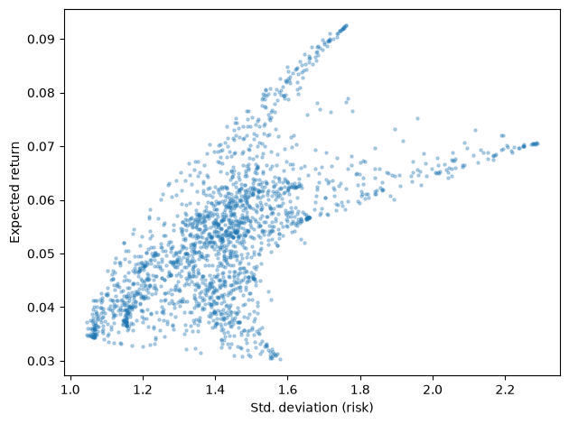
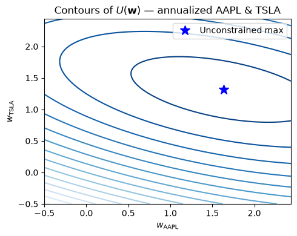
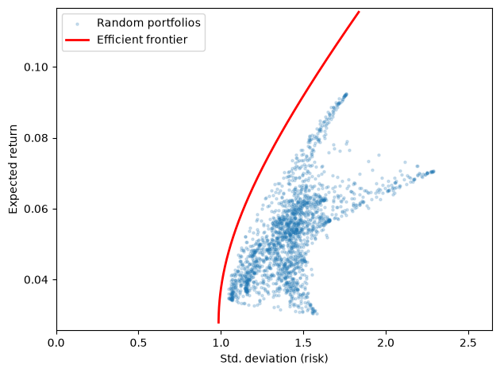

Week 2: Regression, Rebalancing, and CS 1 Walkthrough
STAT 4170 – Financial Time Series and Forecasting
Taylor R. Brown
Part 1: Estimating Cross-Sectional Regression Models
The Estimation Problem
To use \boldsymbol{\mu} and \boldsymbol{\Sigma} in practice, we need to estimate them from data.
The simplest approach: use the sample mean and sample covariance of historical returns. We’ll discover what the drawbacks are from this approach in our case study.
Another approach (maybe the most common): cross-sectional regression models like CAPM.
The Estimation Problem
CAPM stands for the “Capital Asset Pricing Model”
CAPM says that each asset’s return is a linear function of one or more common factors.
This gives us more “efficient” estimates, especially when k is large relative to the sample size n. We’ll talk more about this in our case study.
The Estimation Problem
From a data scientist’s perspective, it’s just simple linear regression and parameter reduction.
From a finance person’s perspective, it’s basically gospel. They really use these “factor models” for a lot of the statistical modeling. It’s very common to run cross sectional regressions and call them “factor models.”
For the financial justification—equilibrium arguments, the market portfolio, and the derivation of the CAPM pricing equation—see Campbell (2018), ch. 3.
# Multivariate OLS: same X for all m dependent variablesB_hat = np.linalg.lstsq(X, Y, rcond=None)[0] # (r+1, m)resids = Y - X @ B_hat # (n, m)Sigma_hat = resids.T @ resids /len(resids) # (m, m)
Part 2: From Regression Output to Forecast Moments
From Regression to Forecast Moments
Given estimates \hat{\mathbf{B}} and \hat{\boldsymbol{\Sigma}}_y, what are \boldsymbol{\mu} and \boldsymbol{\Sigma}?
The law of total expectation says that if our regression model is true, then
This is exactly the sample mean and sample covariance. The CAPM regression is a structured way to get better estimates when factor structure is present.
Part 3: From Forecast Moments to Portfolio Weights
The Optimization Problem
We now have estimates of \boldsymbol{\mu} and \boldsymbol{\Sigma}. We also have control over over \mathbf{w}. How should we choose it?
Large \gamma: investor strongly penalizes variance → conservative portfolio
Small \gamma: investor chases return → aggressive portfolio
Don’t memorize rules of thumb. Try a few. Data scale dependent.
This is the mean-variance utility from Markowitz (1952). For a broader discussion of utility functions, risk aversion coefficients, and the expected utility framework that motivates this form, see Campbell (2018), ch. 1. For worked examples in small-dimensional settings (one risky + one riskless asset, two risky assets), see Campbell (2018), ch. 2.
The Risk-Return Tradeoff
Before solving, let’s visualize: for random weights, what (risk, return) pairs are achievable?
There is a clear frontier — the efficient frontier — that we can trace out analytically.
import matplotlib.pyplot as pltk =len(m_vec)n_w =2000W = np.random.dirichlet(np.ones(k)/k, n_w) # uniform on the simplex, sum-to-1all_means = W @ m_vecall_sds = np.sqrt(np.einsum("ij,jk,ik->i", W, S_mat, W))plt.scatter(all_sds, all_means, alpha=0.3, s=5)plt.xlabel("Std. deviation (risk)")plt.ylabel("Expected return")plt.tight_layout()plt.show()
The Risk-Return Tradeoff

Lagrange Multipliers: The Objective
For two assets we can draw U(w_1, w_2) as contours. The unconstrained maximum is the center of the ellipses.

Lagrange Multipliers: Adding the Constraint
The constraint w_1 + w_2 = 1 is a line. The constrained optimum is where the line is tangent to a contour — meaning \nabla U and \nabla g point in the same direction
As we vary \gamma from \infty (minimum variance) down toward 0 (maximum return), we trace the efficient frontier — the set of portfolios that are optimal for some risk aversion.
gammas = np.logspace(-6, 6, 2000)opt_means = np.array([mpt_weights(m_vec, S_mat, g) @ m_vec for g in gammas])opt_sds = np.array([np.sqrt(mpt_weights(m_vec, S_mat, g) @ S_mat @ mpt_weights(m_vec, S_mat, g)) for g in gammas])# clip frontier to the scatter's range so neither drowns the othersd_max = np.percentile(all_sds, 99) *1.2mu_max = np.percentile(all_means, 99) *1.3mu_min = np.percentile(all_means, 1) -abs(np.percentile(all_means, 1)) *0.2mask = (opt_sds <= sd_max) & (opt_means <= mu_max) & (opt_means >= mu_min)plt.scatter(all_sds, all_means, alpha=0.2, s=5, label="Random portfolios")plt.plot(opt_sds[mask], opt_means[mask], color="red", linewidth=2, label="Efficient frontier")plt.xlim(0, sd_max)plt.ylim(mu_min, mu_max)plt.xlabel("Std. deviation (risk)")plt.ylabel("Expected return")plt.legend()plt.tight_layout()plt.show()
The Efficient Frontier
Ignoring uncertainty of parameter estimates…

Key Takeaways
A portfolio’s return is \mathbf{w}^\intercal \mathbf{y}_{t+1}, a scalar formed by weighting k assets.
The first two moments of the forecast distribution — \boldsymbol{\mu} (mean vector) and \boldsymbol{\Sigma} (covariance matrix) — are sufficient for mean-variance analysis.
Cross-sectional regression (CAPM) gives a structured way to estimate \boldsymbol{\mu} and \boldsymbol{\Sigma} by decomposing returns into a factor component and idiosyncratic noise.
MPT turns the estimation problem into an optimization: given \boldsymbol{\mu} and \boldsymbol{\Sigma}, the closed-form optimal weights \mathbf{w}^* maximize mean-variance utility for a given risk aversion \gamma.
Sweeping over \gamma traces the efficient frontier — the set of portfolios that minimize variance for a given expected return.
Looking Ahead
Now you have all the information you need to finish Case Study 1!
References
Markowitz, H. (1952). Portfolio selection. Journal of Finance.
Campbell, J. Y. (2018). Financial Decisions and Markets. Princeton University Press.
López de Prado, M. (2018). Advances in Financial Machine Learning. Wiley.
Johnson, R. A. & Wichern, D. W. Applied Multivariate Statistical Analysis, ch. 7.7.